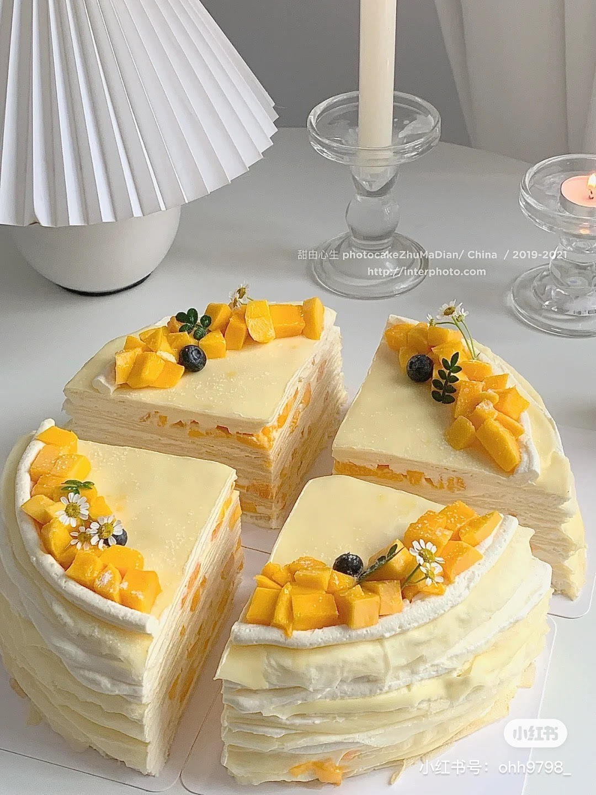

Brown Sugar Ciba (Sticky Rice Cake)

Ingredients
- 1/2 cup lukewarm water
- 1 cup warm milk
- 4 large eggs
- 4 tbsp melted unsalted butter
- 1 cup all-purpose flour
- 2 tbsp sugar
- 1 cup whipping cream
- 1/2 cup powdered sugar
- 2 ripe mangoes
Recipe Instructions
- In a bowl, sift in the flour then add the milk, butter, sugar, water, and eggs.
Mix everything together until well combined and smooth (if it gets lumpy you can sift the mixture). Let the mixture rest for 20 minutes.
- Heat a non-stick pan over medium heat, then grease with butter. Add 1/4 cup crepe batter while swirling the pan to coat the bottom. Flip the crepe when the edges are golden and cook for another 30 seconds.
- Cut the mangoes into even pieces and set aside.
- In a cold bowl, mix the whipping cream and powdered sugar until stiff peaks.
- Place a crepe on the serving plate and spread a thin layer of cream on top. Make four layers of crepe and cream. On the fourth layer, spread the mango slices throughout the cream evenly. cover with another crepe. Repeat for remaining ingredients. Top with mangoes and nuts.